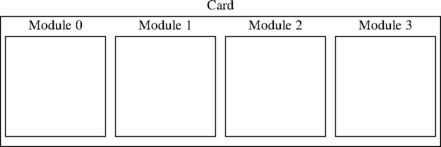
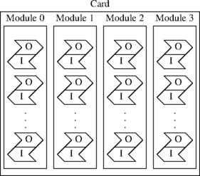

This document provides a general overview of TiNG, and attempts to answer these questions:
TiNG runs on Prosody-X cards or Prosody-S servers and provides the ability to:
Normally you need to create and configure signal receiver objects (typically VMPRx for RTP or TDMRx for TDM) to allow processing of signals coming into the system, and signal transmitter objects (typically VMPTx or TDMTx) to emit signals from the system. These objects then need to be linked up with channels, signal processing paths, or other receiver or transmitter objects using datafeeds - an internal TiNG representation of a signal flow. See How do I connect a channel to somewhere useful? for more details.
Channels are simply objects used by the TiNG API to control processing. Channels generally act as the source (output channel) or the sink (input channel) of signals. Duplex channels can be simultainuously source for one signal and sink for another signal. Just as an operating system might use file handles to allow you to refer to files and perform operations on the files, TiNG uses channels to refer to processing that you perform on these signals.
When an incoming signal is connected to an input channel via a datafeed, then that channel may be controlled through the TiNG API to perform such functions as stream recorded data to the host for recording into a file, detect DTMF digits, or add the signal into a conference.
Conversely a output channel connected to a signal transmitter object can be set up using the TiNG API so that a TDM or RTP signal is generated at that point from, for example, data played from a file, a tone generator, or a conference output.
Signal paths are also objects used by the TiNG API to control processing, however rather than being a source or sink for a signal, they generally take a signal as input, perform some processing on it, and then pass the signal onwards.
When an incoming signal is connected to a signal path via a datafeed, processing elements may be added to the path to apply such functions as gain, echo cancellation, or pitch shift, and then the resulting signal may be connected via a datafeed to a signal transmitter object or some other destination (such as the input of a channel).
Datafeeds are created implicitly through the TiNG API, any object that is the source of a signal has an associated datafeed whose identifier may be obtained from that object in order to connect the signal to one or more other objects.
When you install a Prosody-X card, it has one or more Prosody processors on it. These are advanced digital signal processors each with their own memory. Because each Prosody processor comes with its own private memory, they are often referred to as modules. Each module runs a downloadable TiNG kernel and seperately loadable algorithm modules.

When TiNG is used with a ProsodyS server, then its Prosody processor is represented by a single module on a virtual card (no kernel or algorithm downloading is required).
You must open a card in order to access its modules.
You refer to a module in your program by using a tSMModuleId value.
The tSMModuleId values must be obtained from sm_open_module()
When you allocate a channel, it refers to processing resources on a single module. A channel is always associated with one module and can never be split between two or more modules, nor can it move from one module to another.

Each module can support many channels. The maximum number it can support depends on what operations the channels are performing.
Yes. There are four kinds of channels:
An input-only channel cannot perform any operation that generates output (such as generating tones). An output-only channel cannot do anything that requires input (such as detecting tones). A half duplex channel can do anything, but cannot do input and output at the same time, while a full duplex channel can do input and output simultaneously.
Generally, it is a good idea to create channels which are either input-only or output-only as this protects you against some mistakes in which you use the wrong channel since the API functions will return an error if you try to do the wrong kind of operation on a channel. However, if you are using data communications, some protocols require that you do both the reception and transmission of data for a single connection on the same channel (for example, V.110).
Several different resources are used by a channel. The API library allocates some resources internally, such as memory to contain configuration information for the channel. These resources are allocated when the channel is allocated. Other resources are allocated on the Prosody processor that handles the channel. These resources are only allocated when an operation requires them, so for example, if you allocate a channel and play a file on the channel, when you finish playing the file, the channel is no longer using any resources on the Prosody processor.
When performing play, record and other tasks, you need to check the channel status so that you can find out when important changes to the status occur indicating things like when to supply or collect more data and when the task has finished. To make this checking efficient, a facility is available to indicate when it may be worth checking the status. This is provided using tSMEventId objects. You allocate one of these (with smd_ev_create()), associate it with a channel (with sm_channel_set_event()), and then you can wait on this event which will be signalled when you need to check the channel's status. You can either wait using smd_ev_wait() or wait for one of several events in a manner which varies between operating systems. See Prosody events for further details.
The API implemented by the TiNG library is designed so that, as much as possible, it never blocks in an API call waiting for a response over IP from a Prosody processor. One consequence of this is an error related to an API call that is detected by a Prosody processor rather than the library is not reported in the return call of the API call, instead it is reported through an error return for a subsequent status call (for the object that was the subject of the API call).
For example, if an attempt is made to replay a mu-Law WAV file and mu-Law firmware had not been downloaded onto the Prosody X module, then no error would be reported for the initial sm_replay_start() call, but a subsequent sm_replay_status() will report ERR_SM_NO_SUCH_FIRMWARE.
Some operations on a channel are started by one API call and do not complete before the API call returns. They are summarised in this table:
| Operation | |
|---|---|
| Started by | Completed when |
| sm_replay_start() | sm_replay_status() returns kSMReplayStatusComplete |
| sm_record_start() | sm_record_status() returns kSMRecordStatusComplete |
| sm_play_tone() [see note 1] | sm_play_tone_status() returns kSMPlayToneStatusComplete |
| sm_play_cptone() [see note 1] | sm_play_cptone_status() returns kSMPlayCPToneStatusComplete |
| sm_play_digits() [see note 1] | sm_play_digits_status() returns kSMPlayDigitsStatusComplete |
| sm_listen_for() enabling a detection | sm_listen_for() enabling no detection |
| sm_asr_listen_for() enabling recognition | sm_asr_listen_for() disabling recognition |
| sm_conf_prim_start() | sm_conf_prim_status() returns kSMConfStatusStopped |
| sm_condition_input() enabling a conditioning type | sm_condition_input() enabling no conditioning type |
| sm_catsig_listen_for() enabling a signal categorisation algorithm | sm_catsig_listen_for()
with non-zero abort_catsig_alg field
|
| sm_replay_file_start() | sm_replay_file_complete() returns |
| sm_record_file_start() | sm_record_file_complete() returns |
| sm_replay_bfile_start() | sm_replay_bfile_complete() returns |
| sm_record_bfile_start() | sm_record_bfile_complete() returns |
| smdc_channel_config() | smdc_tx_status() returns kSMDCTxStatusFinished and/or smdc_rx_status() returns kSMDCRxStatusFinished |
wait_for_completion field. If
this is non-zero, then the operation is already complete when the function
returns and you should not attempt to check the status after this.
Data which is produced or received by a channel usually is conveyed over RTP streams or TDM timeslots (Prosody X only). Datafeeds are used route data within the Prosody processor itself before it is rendered into RTP packets or TDM samples.
The typical sequence of TiNG API calls to connect a channel output to a previously configured VMP object emitting an RTP stream would be: sm_channel_get_datafeed() followed by sm_vmptx_datafeed_connect()
The typical sequence of TiNG API calls to connect a signal recovered from an RTP stream by a previously configured VMPRx to a channel input would be: sm_vmprx_get_datafeed() followed by sm_channel_datafeed_connect()
TDM Timeslots are connected to a digital switch matrix controlled by the Aculab switch driver. Each ProsodyX card module has a limited number of available timeslots, specifically 256 input timeslots and 256 output timeslots, organised into streams (two input and two output) of 128 timeslots each. You explicitly connect a channel to a timeslot via a datafeed before starting an operation on the channel.
The typical sequence of TiNG API calls to connect a channel output to a TDM timeslot would be: sm_channel_get_datafeed() followed by sm_tdmtx_datafeed_connect()
The typical sequence of TiNG API calls to connect a TDM signal to a channel input would be: sm_tdmrx_get_datafeed() followed by sm_channel_datafeed_connect()
For compatibility with older TDM based applications that ran on Prosody cards prior to the introduction of ProsodyX, the calls sm_switch_channel_input() and sm_switch_channel_input() allow the above connections to be done in one step - however use of these calls is not recommended in new applications.
The switch driver documentation explains the numbering of streams and timeslots for ProsodyX cards.
You can use the function sm_path_echocancel() to start echo cancellation on a signal processing path. Typically the signal fed to the path would be a signal received from a TDM timeslot, and the signal output by the path would be the result of echo cancellation. You must also supply an additional reference signal.
Alternatively the function sm_condition_input() can be used to start echo cancellation on a channel. You can then use the resulting channel signal for other operations, such as conferencing, which will then use the echo-cancelled signal. This channel is the primary and you must specify another channel to use as the reference.
The primary is the signal being received from which echo is to be removed. The reference is the signal which may appear in the primary as an echo. One typical scenario is that the reference is a prompt which is being played through Prosody to a user and the primary is the signal from that user which we are feeding into a speech recogniser. If we want to recognise the user's speech, it may be necessary to remove any echo of our prompt - otherwise the speech recogniser would think that the prompt was the user speaking and decode it. This problem does not normally arise when you are doing tone detection instead of speech recognition because prompts do not normally contain the tones being detected.
It is not as easy to give a universal answer as it may first appear. One obvious way to handle a variety of possible configurations is for the application to use API functions to discover what resources are available and then to use them. This approach has two main disadvantages: it makes the application more complex and it makes testing difficult.
The application becomes complex because the consequences of the presence or absence of a resource can have a far-reaching effect. For example, if an additional Prosody processor module is found, this must not cause the application to allocate channels on that module which later need to be connected in a conference with channels on another module (which is not possible). Similarly, finding fewer modules must not mean that channels are allocated in a way which overloads one module when there is spare capacity elsewhere.
Testing is made difficult because you need to have each possible configuration available, which means lots of shutting down, exchanging cards, and rebooting. It also makes it difficult to test because parts of the application become interdependent, which produces more combinations to be tested.
There is another, less significant, disadvantage which is that if a system develops a fault and a resource is no longer available, the application will not realise that the resource is supposed to be present.
So if we do not let an application configure itself automatically, what would be a practical alternative? For many applications you can plan resource usage in advance. For example, in a voicemail application you can pre-determine which Prosody module will handle a call depending on which trunk and timeslot the call comes from. With the Prosody X PCIe card with four trunks fitted you might decide that calls from the first two trunks will be handled by the first Prosody module on that card and calls from the other two trunks will be handled by the second Prosody module. This makes it obvious that the two pairs of trunks are independent and cannot interfere with each other. It also makes it much easier to track down problems. For example, if there is a problem with one trunk which affects Prosody (such as distortion which prevents reliable tone detection) it is easier to see that it always happens in one place if the configuration is fixed.
In practice, the best way to configure an application is often some sort of configuration file which is read when the application starts. This allows the application to be adapted to a variety of configurations without having to worry about it doing anything unexpected in an unusual configuration.
While it is possible for an application to download firmware, it is
normally better to do so before starting the application.
This makes testing and debugging much easier because when a special
firmware module is needed to help with a test, you can simply
download it and run your application. If the application downloaded
the module, it would have to be modified to download the extra
module. For example, if you want to determine what signal is being
processed, you might run a recording using locrec from
the test directory, which would allow you to make a
recording while your application was running.
Normally a project should refer to any necessary files rather than
have local copies. This is the way libraries usually work (you
wouldn't copy "stdio.h" into a project, would you?). If you reserve a
particular location for Aculab software (e.g.
/opt/aculab on Unix systems, or C:\Program
Files\Aculab on Windows), then you can make several projects
refer to this location, making it easier to see what versions you
might be using. On Linux, you can use a symbolic link if
you want to have a location which always refers to the latest
installed version. On Windows 2000/XP you can do the same with
junctions but see the comment at the end of the page
Prosody installation guide: unpacking.
If an external requirement (such as a version control standard) forces you to copy parts of a distribution into your project, be sure to do this in a way which avoids mixing files from different versions. Keep a record of which files you copied and when you upgrade to a later version, ensure that you remove all of them before copying in the files from the new version.
While it is not generally a good idea to copy Prosody files into your projects,
the .h files in the include directory have been
processed in a way which tries to make this as safe as possible. Each
is self-contained, which reduces the possibilities for mixing
arbitrary files from different versions. However this is not a
complete protection. For example, you can still copy
smdrvr.h from one version and smbesp.h from
a different version and attempt to use both in a single application.
All of the documentation for TiNG is listed on the Prosody main page. Additional documentation can be found on the Aculab web site.